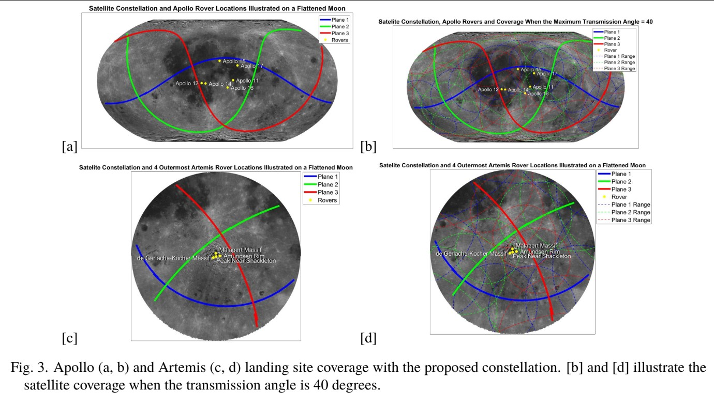

Project Description
My team’s submission proposed using space-based solar power to enable extended lunar Extravehicular Activities (EVAs) and power lunar exploration infrastructures, qualified us as finalists at the International Astronautical Congress (IAC) in Milan, Italy. This accomplishment also awarded me complimentary access to the Space Generation Congress (SGC), an annual gathering organized by the Space Generation Advisory Council to connect young professionals with industry leaders. Our constellation design aimed to deliver consistent solar power to the Moon’s surface, allowing extended lunar operations during periods when traditional power sources might fail. My contributions to the project involved determining the constellation’s structure, including the number of satellite planes and their configurations, then justifying each aspect to maximize efficiency and effectiveness. To analyze these parameters, I used MATLAB’s R2024a Lunar Orbital Propagation and mapping toolboxes, creating visualizations to illustrate the constellation’s coverage and power distribution capabilities. Additionally, I designed critical satellite components, including the power delivery laser, battery, cooling system, solar panels, and focusing mechanism, ensuring all parts worked cohesively. After modeling the constellation in MATLAB, I calculated the theoretical power output to various lunar points and created figures to communicate our findings.
